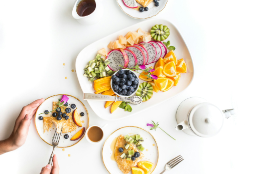

Konsumsi Makanan Seimbang untuk Kesehatan Optimal
8 April 2024
Menjaga pola makan seimbang menjadi kunci untuk mendukung kesehatan tubuh secara menyeluruh. Makanan seimbang adalah kombinasi yang tepat dari karbohidrat, protein, lemak, vitamin, mineral, dan serat yang diperlukan tubuh untuk menjalankan fungsinya dengan baik.
Ahli gizi, Dr. Anisa Putri, menjelaskan bahwa pola makan yang seimbang dapat membantu mencegah berbagai penyakit kronis, seperti diabetes, hipertensi, dan penyakit jantung. "Keseimbangan nutrisi penting untuk menjaga metabolisme tubuh, mendukung sistem kekebalan tubuh, serta meningkatkan energi dan konsentrasi," ujarnya dalam seminar kesehatan di Jakarta.
EUntuk mencapai konsumsi makanan seimbang, masyarakat disarankan untuk mengadopsi pola makan 4 Sehat 5 Sempurna yang dimodifikasi sesuai panduan Isi Piringku dari Kementerian Kesehatan. Setengah piring makanan harus diisi dengan buah dan sayuran, sementara sisanya terdiri dari sumber karbohidrat seperti nasi atau kentang, dan protein seperti ikan, daging, atau tahu-tempe.
Selain itu, penting untuk mengontrol porsi makanan dan mengurangi konsumsi gula, garam, serta lemak berlebih. "Kunci utamanya adalah moderasi dan variasi," tambah Dr. Anisa.
Di tengah meningkatnya tren makanan cepat saji, masyarakat diimbau untuk lebih sadar dalam memilih makanan. Memasak di rumah dengan bahan segar dan alami menjadi alternatif yang lebih sehat dibandingkan membeli makanan olahan.
Mari mulai hidup sehat dari sekarang dengan memilih makanan seimbang yang tidak hanya membuat tubuh bugar tetapi juga meningkatkan kualitas hidup.